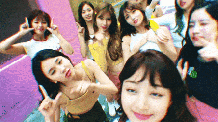

Twice tiene una lÃnea vocal bastante potente que se complementa del rap de dos de sus integrantes. Nunca han dejado el concepto cute y son el mayor exponente en este estilo, siempre defendiendo que una actuación adorable no tiene limitaciones.🧁
Las Canciones famosas de twice que las llevaron al exito🍉
1. Twice:What is love?
2. Twice:TT M/V
3.Twice:LIKEY

Eso ya seria por la pagina web, Gracias por pasarte tqm❤
Esta pagina la hice por una personita muy especial💗